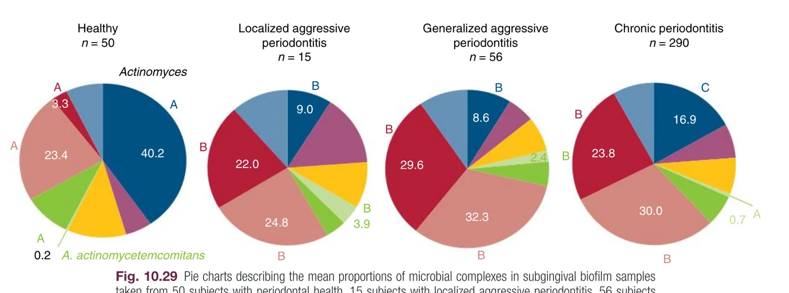

نسخه استخراجشده؛ ترجمه یا تأیید علمی انجام نشده است. وضعیت: captured
سوکرانسکی با تحلیل هزاران نمونه پلاک، باکتریها را به گروههایی دستهبندی کرد که با هم ظاهر میشوند و به هر گروه رنگی داد.

| کمپلکس | اعضای شاخص | جایگاه |
|---|---|---|
| 🟣 بنفش | Veillonella parvula، Actinomyces odontolyticus | کلونیزر اولیه |
| 🟡 زرد | گونههای Streptococcus | کلونیزر اولیه |
| 🟢 سبز | Capnocytophaga، Eikenella corrodens | کلونیزر اولیه |
| 🟠 نارنجی | Fusobacterium nucleatum، Prevotella intermedia، Campylobacter rectus | پل و پیشدرآمد بیماری |
| 🔴 قرمز | P. gingivalis، T. forsythia، T. denticola | قویترین ارتباط با بیماری |
📌 ترتیب استقرار: بنفش و زرد و سبز ⬅️ نارنجی ⬅️ قرمز. کمپلکس نارنجی پیششرط استقرار کمپلکس قرمز است.
سه عضو کمپلکس قرمز:
Porphyromonas gingivalis
Tannerella forsythia
Treponema denticola
همگی گرم منفی و بیهوازی.
قویترین ارتباط آماری با عمق پاکت و خونریزی هنگام پروب.
عمدتاً پروتئولیتیکاند؛ یعنی از تجزیه پروتئینهای میزبان تغذیه میکنند.
در عمیقترین لایه بیوفیلم زیرلثهای و در تماس با بافت مستقر میشوند.
⚠️ نکته مهم: کمپلکس قرمز نمیتواند بدون حضور قبلی کمپلکس نارنجی مستقر شود. یعنی زنجیرهای وجود دارد که میتوان آن را در مراحل زودتر شکست.
این باکتری در طبقهبندی رنگی سوکرانسکی در هیچ کمپلکسی جای نمیگیرد و جداگانه بررسی میشود.
گرم منفی، بیهوازی اختیاری.
قویترین ارتباط با پریودنتیت مهاجم موضعی در نوجوانان و جوانان؛ در طبقهبندی ۲۰۱۷ همین تصویر را «پریودنتیت با الگوی مولر-ثنایا، گرید C» مینامند.
الگوی کلاسیک درگیری: مولرهای اول و ثنایاها.
یک واریانت پرحدت این باکتری با حذفی در ناحیه پروموتر ژن لکوتوکسین که باعث تولید بسیار بیشتر این سم میشود.
در جمعیتهای با تبار شمال و غرب آفریقا شیوع بالاتری دارد.
با پیشرفت سریعتر و شدیدتر بیماری همراه است.
⚠️ اشتباه رایج ۱: A. actinomycetemcomitans عضو کمپلکس قرمز نیست؛ جداگانه طبقهبندی میشود.
⚠️ اشتباه رایج ۲: کمپلکس نارنجی پل و پیششرط است، نه خودِ کمپلکس قرمز.
⚠️ اشتباه رایج ۳: فوزوباکتریوم عضو کمپلکس نارنجی است، نه قرمز.
نوع سؤال: ساخت کلمه · 4 خانه
حروف منبع: ر · ز · م · ق